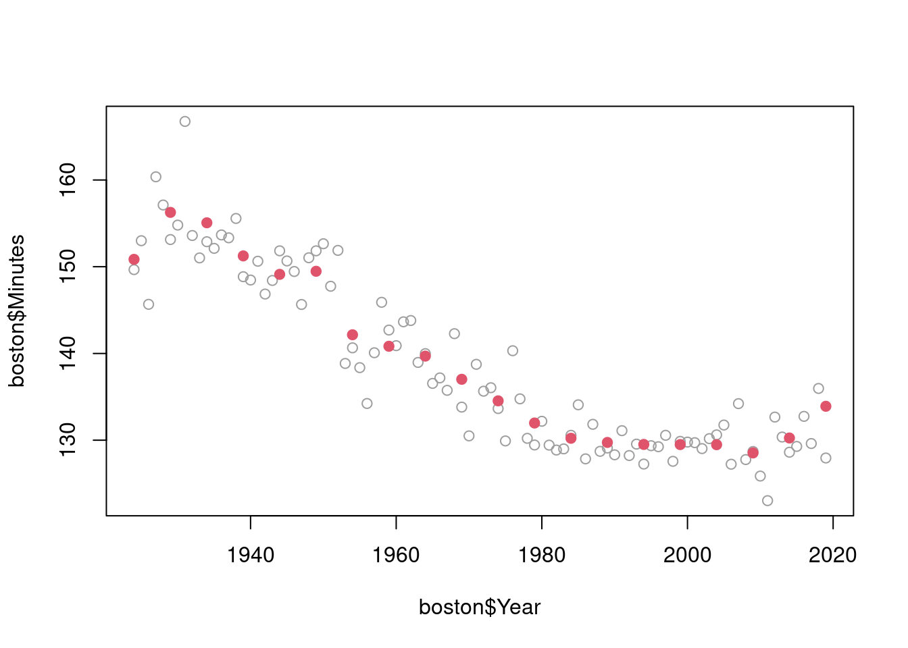

# CODE GOES HEREHomework 3: [YOUR NAME HERE]
Introduction to Time Series, Fall 2023
The total number of points possible for this homework is 38. The number of points for each question is written below, and questions marked as “bonus” are optional. Submit the knitted html file from this Rmd to Gradescope.
If you collaborated with anybody for this homework, put their names here:
Regression troubles
- (5 pts) Suppose that \(y \in \mathbb{R}^n\) is a response vector and \(X \in \mathbb{R}^{n \times p}\) is a predictor matrix, with \(p > n\). Prove that there is at least one \(\eta \not= 0\) (not equal to the zero vector) that is in \(\mathrm{null}(X)\), the null space of \(X\). Prove that if \(\tilde\beta\) is a least squares solution in the regression of \(y\) on \(X\), then any vector of the form [ = + , ] is also a solution.
SOLUTION GOES HERE
- (6 pts) With \(X, y\) as in Q1, suppose that \(\tilde\beta\) is a least squares solution with \(\tilde\beta_j > 0\), and suppose that \(\mathrm{null}(X) \not\perp e_j\), where \(e_j\) is the \(j^{\text{th}}\) standard basis vector (i.e., \(e_j\) is a vector with all 0s except for a 1 in the \(j^{\text{th}}\) component), and recall we write \(S \perp v\) for a set \(S\) and vector \(v\) provided \(u^T v = 0\) for all \(u \in S\). Prove that there exists another least squares solution \(\hat\beta\) such that \(\hat\beta_j < 0\).
SOLUTION GOES HERE
Ridge and lasso
- (8 pts) On the cardiovascular mortality regression data, form lagged features from the particulate matter and temperature variables, using lags 4, 8, …, 40 from each. Using the
glmnetpackage, fit a ridge regression and lasso regression (two separate models), each over a grid of tuning parameter values \(\lambda\) chosen by theglmnet()function, with cardiovascular mortality as the response and all the lagged features as predictors (you should have 20 in total: 10 from particulate matter, and 10 from temperature). However, make sure you do this in a split-sample setup for validation, as follows, for each of ridge and lasso:
fit the
glmnetobject on the first half of the time series;make predictions on the second half of the time series, for each \(\lambda\);
record the MAE of the predictions on the second half, for each \(\lambda\);
choose and report the value of \(\lambda\) with the lowest MAE;
plot the cardiovascular mortality time series, along with the predictions on the second half, and print the MAE and the selected value of \(\lambda\) on the plot.
You can build off the code given in the regularization lecture (weeks 5-6: “Regularization and smoothing”) for fitting the ridge and lasso models, and the regression lecture (weeks 3-4: “Regression and prediction”) for the split-sample validation. Note carefully that the lecture code includes lag 0, and here we do not, so that we can make ex-ante 4-week ahead forecasts!
- (1 pts) Which lagged features were present in the MAE-optimal lasso model, selected by split-sample validation, in Q3?
# CODE GOES HERE(8 pts) Repeat Q3, except implement time series cross-validation instead of split-sample validation. You should begin time series cross-validation on the second half of the time series, treating the first half as a burn-in set. Also, be sure to fit each ridge or lasso model using a trailing window of 200 time points (not all past).
Warning: doing time series cross-validation properly will require us to pay attention to the following. The
glmnet()function chooses a sequence of tuning parameter values \(\lambda\) based on the passed feature matrixxand response vectory(its first two arguments). However, in time series cross-validation, this will change at each time point. So if you just callglmnet()naively, then you will not have a consistent \(\lambda\) sequence over which to calculate MAE and perform tuning.You can circumvent this issue by defining your own \(\lambda\) sequence ahead of time, and forcing
glmnet()to use it by passing it through itslambdaargument. Indeed, the best thing to do here is just to use thelambdasequence thatglmnet()itself derived for the ridge and lasso models fit to the first half of the time series, which you already have from Q3. Do this, and then just as in Q3, produce a plot of the cardiovascular mortality time series, along with the predictions from time series CV on the second half, and print the MAE and the selected value of \(\lambda\) on the plot.You can build off the code given in the regression lecture for time series cross-validation (or the code you wrote in Homework 2 to implement time series cross-validation).
# CODE GOES HERE- (Bonus) Report which lagged features were most frequently selected by the lasso. Because the lasso models will be refit at each time point (in the second half of the data set), you will have to additionally store the lasso solutions along your time series CV pass. Then, look back at the solutions that correspond to the MAE-optimal \(\lambda\) value, and choose some way of summarizing which of its components were consistently large in magnitude over time.
# CODE GOES HEREHP filter
- (5 pts) Recall in lecture we saw the HP filter could be written explicitly as [ = K , y, ] where \(D \in \mathbb{R}^{(n-2) \times n}\) is the second difference matrix on \(n\) points. In other words, defining \(K \in \mathbb{R}^{n \times n}\) as above, [ i = {j=1}^n K{ij} y_j, i = 1,,n. ] Compute the matrix \(K\) empirically for a problem of size \(n=100\), and setting the tuning parameter to be \(\lambda=100\); inspect three of its rows, at indices \(i = 25, 50, 75\). For each \(i\), plot the \(i^{\text{th}}\) row as a curve over the underlying position \(1,\dots,n\); that is, plot the x-y pairs [ (x_j, y_j) = (j, K_{ij}), j = 1,,n ] as a curve. Overlay the curves for all three rows on the same plot, each in a different color. What do these curves look like to you? Use the plot to argue that the HP filter acts like a kernel smoother.
# CODE GOES HERE- (Bonus) Do a literature search to find theory on the asymptotically equivalent kernel for the HP filter. This should have a closed-form. Plot this and comment on whether or not your empirical results adhere to what is known asymptotically.
# CODE GOES HERETrend filter
(Bonus) Implement 5-fold cross-validation in order to tune \(\lambda\) in trend filtering applied to the Boston marathon men’s data set. Recall the description of how to set folds in a special “structured” way, for tuning smoothers, given near the end of the lecture notes (weeks 5-6: “Regularization and smoothing”). The code below shows how to run trend filtering and derive estimates at the held-out points for one fold. You can build off this code for your solution. You will need to install the
glmgenpackage from GitHub, which you can do using the code that has been commented out.Important note: just like
glmnet(), thetrendfilter()function (in theglmnetpackage) computes its ownlambdasequence. So you will need to define an initiallambdasequence to pass to each subsequent call totrendfilter(), so that you can have a consistent grid of tuning parameter values over which to perform cross-validation. We do this below by using thelambdasequence thattrendfilter()itself derived when the trend filtering model is fit on the full data set.After implementing cross-validation, compute and report the \(\lambda\) value with the smallest cross-validated MAE. Then, lastly, plot the solution at this value of \(\lambda\) when the model is fit to the full data set (this is already available in the
tfobject below.)
# devtools::install_github("glmgen/glmgen", subdir = "R_pkg/glmgen")
library(glmgen)
library(fpp3)Registered S3 method overwritten by 'tsibble':
method from
as_tibble.grouped_df dplyr── Attaching packages ──────────────────────────────────────────── fpp3 1.0.0 ──✔ tibble 3.2.1 ✔ tsibble 1.1.5
✔ dplyr 1.1.4 ✔ tsibbledata 0.4.1
✔ tidyr 1.3.0 ✔ feasts 0.3.2
✔ lubridate 1.9.3 ✔ fable 0.3.4
✔ ggplot2 3.5.1 ✔ fabletools 0.4.2── Conflicts ───────────────────────────────────────────────── fpp3_conflicts ──
✖ lubridate::date() masks base::date()
✖ dplyr::filter() masks stats::filter()
✖ tsibble::intersect() masks base::intersect()
✖ tsibble::interval() masks lubridate::interval()
✖ dplyr::lag() masks stats::lag()
✖ tsibble::setdiff() masks base::setdiff()
✖ tsibble::union() masks base::union()boston = boston_marathon |>
filter(Year >= 1924) |>
filter(Event == "Men's open division") |>
mutate(Minutes = as.numeric(Time)/60) |>
select(Year, Minutes)
# Fit trend filtering on the entire data in order to grab the lambda sequence
tf = trendfilter(x = boston$Year, y = boston$Minutes, k = 1)
lambda = tf$lambda
n = nrow(boston) # Number of points
k = 5 # Number of folds
inds = rep_len(1:k, n) # Folds indices
# Fit trend filtering on all points but those in first fold. We are forcing it
# to use the lambda sequence that we saved above
tf_subset = trendfilter(x = boston$Year[inds != 1],
y = boston$Minutes[inds != 1],
k = 1, lambda = lambda)
# Compute the predictions on the points in the first fold. Plot the predictions
# (as a sanity check) at a particular value of lambda in the middle of the grid
yhat = predict(tf_subset, x.new = boston$Year[inds == 1])Warning: In predict:
Predict called at new x values out of the original range.plot(boston$Year, boston$Minutes, col = 8)
points(boston$Year[inds == 1], yhat[, 25], col = 2, pch = 19)
Spectral analysis
- (3 pts) Let \(\omega_j\), \(j = 1,\dots,p\) be fixed and arbitrary frequencies and let \(U_{j1}, U_{j2}\), \(j = 1,\dots,p\) be uncorrelated random variables with mean zero, where \(U_{j1}, U_{j2}\) have variance \(\sigma^2_j\). Define [ x_t = {j=1}^p ( U{j1} (2j t) + U{j2} (2_j t) ) ]
for \(t = 1,2,3,\dots\). Prove that this process is stationary, and show that its auto-covariance function is of the form given in lecture (weeks 7-8, “Spectral analysis and filtering”).
SOLUTION GOES HERE
- (2 pts) Construct a small empirical example to verify the auto-covariance formula you derived in Q10. That is, generate a process with at least \(p=2\) components. compute its auto-correlation function with
acf(), and compare to the analytic formula you derived.
# CODE GOES HERE